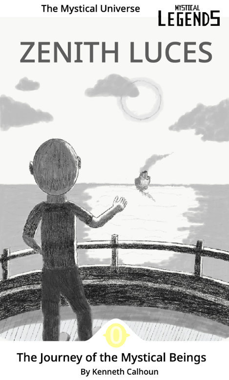
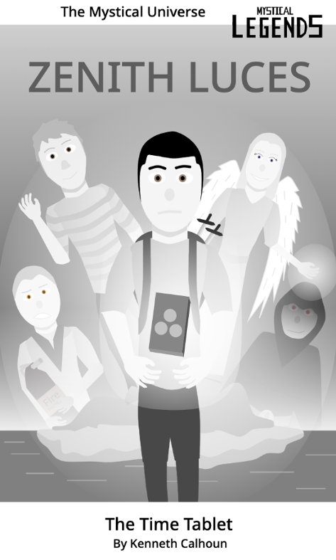
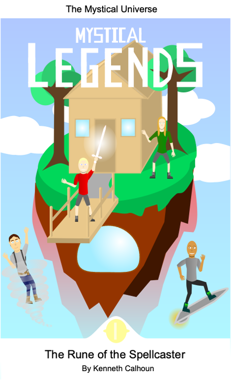

The Mystical Legends - Book Series features two ages:
The 100 Years Before, or the time of Zenith Luces,
The Present, the rise of the Mystical Legends.
Have you ever wodered whether there actually were creatures and species like Elves, Goblins, Naiads, etc...? Well you can learn how they survive in the modern world in an exciting book series! Mystical Legends is a science fiction series about the real world with mythical (or rather mystical, in this sense) creatures. The series features times of the Romans and how the mystical beings lived then, the 20th century and how the mystical beings found a new island to inhabit and how they defeated evil villainy, and the modern age and how the mystical beings enhanced their society and technology beyond what is imagined by a human. Take a narrative life of the modern age by a boy who had a complicated history or take a narratated life of a boy who saved the mystical beings from the mainlands.
|

Zenith Luces and the Journey of the Mystical BeingsBook #0 of the Zenith Luces Series - Written by Kenneth CalhounThe first book in the Mystical Legends - Zenith Luces series. This short story features a boy who wants to help people for the cause of good. He suddenly finds himself being the leader of the mystical beings who want to find a place to live away from the mainlands. Find out by reading this amazing short story (for free) if he suceeds. |
|

Zenith Luces and the Time TabletThe Final Book of the Zenith Luces Series - Written by Kenneth CalhounThe final book that concludes the narrative life in the 20th century. The Zenith Luces adventures conclude in this short story with a thrilling time travel adventure. The evils come at a final battle which the heroes must bravely fight. A mysterious object is used by a dominant wielder. Read on to find out who will conclude the events of the old era. |
|

Mystical Legends - Rune of the SpellcasterBook #1 of the Mystical Legends Series - Written by Kenneth CalhounThe first book in the Mystical Legends Series. A boy who does not know his history finds himself revealing all the secrets hidden from him. There is a strange object that a shadow lord is in search of and the boy is the key to it. Journey through the first book to find out the modern life of the mystical beings, how the boy saves the island, how he learns about his past, and how he sets the future. |